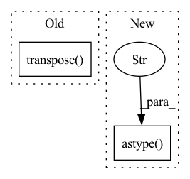

Pattern ID :36027
Before Change
if target:
return (
input.transpose(2, 0, 1).astype("float32") / 255,
target.transpose( 2, 0, 1) ,
)
else:
input.transpose(2, 0, 1).astype("float32") / 255After Change
if mask:
return (image.transpose(2, 0, 1).astype("float32") / 255, mask)
else:
image.transpose(2, 0, 1).astype("float32" ) / 255
In pattern: SUPERPATTERN
Frequency: 3
Non-data size: 2
Instances Fragment ID: 102330847
Project Name: biasvariancelabs/aitlas
Commit Name: 27f312141915526df146b366df480919d479e6f3
Time: 2020-11-01
Author: ivan.kitanovski@gmail.com
File Name: aitlas/transforms/segmentation.py
M Class Name: BaseSegmentation
N Class Name: BaseSegmentation
M Method Name: __call__(2)
N Method Name: __call__(3)
M Parent Class: BaseTransforms
N Parent Class: BaseTransforms
M File Name: aitlas/transforms/segmentation.py
N File Name: aitlas/transforms/segmentation.py
M Start Line: 8
M End Line: 15
N Start Line: 9
N End Line: 14
Before Change
vals = {
"df-count": df.count().to_frame().transpose(),
"df-sum": df.sum().astype("float64").to_frame().transpose(),
"df2-sum": df2.sum().to_frame().transpose() ,
}
// NOTE: Perhaps we should convert to pandas here
// (since we know the results should be small)?After Change
column = _flatten_list_column_values(column)
vals["count"][name] = [column.count()]
vals["sum"][name] = [column.sum().astype("float64" ) ]
vals["squaredsum"][name] = [column.astype("float64").pow(2).sum()]
// NOTE: Perhaps we should convert to pandas here Fragment ID: 102330859
Project Name: nvidia/nvtabular
Commit Name: 5c85dfdee22edd1cd70f0c657f228f51f83e128d
Time: 2021-10-25
Author: github@benfrederickson.com
File Name: nvtabular/ops/moments.py
M Class Name: AnonimousClass
N Class Name: AnonimousClass
M Method Name: _chunkwise_moments(1)
N Method Name: _chunkwise_moments(1)
M Parent Class:
N Parent Class:
M File Name: nvtabular/ops/moments.py
N File Name: nvtabular/ops/moments.py
M Start Line: 65
M End Line: 75
N Start Line: 67
N End Line: 75
Before Change
df_merged = pd.DataFrame(data = [original_csv.cleaned_text.values, azure_csv.cleaned_text.values],index=None)
df_merged = df_merged.transpose()
df_merged.columns = ["original", "predicted"]
df_merged["wer"] = df_merged.apply(calculate_wer, axis = 1)
df_merged["cer"] = df_merged.swifter.apply(calculate_cer, axis = 1)After Change
azure_csv = [line.strip() for line in azure_csv]
azure_csv = pd.DataFrame(azure_csv, columns=["text"])
original_csv["ix"] = original_csv["text"].str.split(" \(None-").str[-1].str[0:-1].astype("int" )
azure_csv["ix"] = azure_csv["text"].str.split("\(None").str[-1].str[1:-1].astype("int")
original_csv = preprocess(original_csv)
azure_csv = preprocess(azure_csv)
Fragment ID: 102330850
Project Name: open-speech-ekstep/vakyansh-wav2vec2-experimentation
Commit Name: 674a4889d31ba73e15de555d72adc3f16db4400d
Time: 2021-03-11
Author: ps@PSs-MacBook-Pro.local
File Name: utils/wer/wer_wav2vec.py
M Class Name: AnonimousClass
N Class Name: AnonimousClass
M Method Name: run_pipeline(2)
N Method Name: run_pipeline(2)
M Parent Class:
N Parent Class:
M File Name: utils/wer/wer_wav2vec.py
N File Name: utils/wer/wer_wav2vec.py
M Start Line: 86
M End Line: 87
N Start Line: 73
N End Line: 94